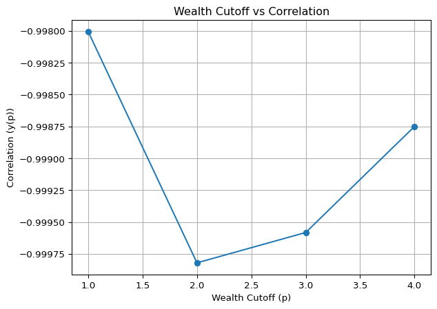

This study investigates the most defining dichotomy in wealth distribution by identifying the percentile cutoff that maximizes the absolute correlation between the net worth shares of two complementary groups. By analyzing quarterly data from the Federal Reserve Economic Data (FRED) spanning 1989–2024, we assess the zero-sum nature of capital accumulation and determine the wealth threshold where fluctuations in net worth shares are most systematically mirrored. Our findings reveal that dividing the population at the 90th percentile (top 10% vs. bottom 90%) exhibits the strongest inverse correlation, suggesting that this division most clearly exposes the struggling aspects of capital accumulation over time. This insight provides a structural perspective on wealth polarization and contributes to ongoing discussions about taxation, inequality, and economic mobility. Future research could extend this analysis by integrating macroeconomic indicators such as GDP growth, investment trends, and labor market conditions to further understand how systemic wealth flows evolve in response to economic shifts and policy interventions.
Introduction
Wealth concentration and inequality have long been central issues in economics, attracting renewed attention as wealth disparities continue to widen. The well-documented Pareto Principle suggests that the top 20% holds approximately 80% of total wealth, but empirical studies indicate that this ratio has become even more skewed over time (Piketty and Saez 2003; Alvaredo et al. 2013; Saez and Zucman 2016). Such trends raise fundamental questions about the underlying dynamics of wealth distribution: Is wealth accumulation a zero-sum game? If so, what is the most evident dichotomy that best exposes this phenomenon?
At every moment, newly created capital is introduced into the economic system through production, subsequently distributed among economic agents, and then either dissipated through consumption or retained through investment. Unlike a static framework where total wealth is fixed, real-world economic systems operate as dynamic entities where total wealth evolves over time. The interplay between production, distribution, consumption, and investment determines how wealth is allocated and reallocated across different socioeconomic groups. If the system maintains a stable and proportional allocation of new wealth over time, the relative shares of net worth for different groups remain unchanged. However, if allocation mechanisms fluctuate, then the wealth share of one group necessarily increases at the expense of another—reinforcing a zero-sum dynamic.
The key question, therefore, is: How should we partition the population to most clearly expose this zero-sum characteristic? In other words, at which wealth cutoff percentile do we observe the highest absolute correlation between two complementary wealth groups? Should we divide the population into the top 10% versus the bottom 90%? Or is a more extreme division, such as top 0.1% versus bottom 99.9%, more effective in revealing these dynamics?
Data
Our empirical analysis is based on FRED (Federal Reserve Economic Data), covering quarterly observations from 1989 to 2024. The dataset is structured into wealth brackets representing net wealth shares at different percentile levels:
Groups (stars)
\(X_4(t)\): Share of Net Worth Held by the Top 0.1% (99.9th to 100th Wealth Percentiles) (WFRBSTP1300)
\(X_3(t)\): Share of Net Worth Held by the 99th to 99.9th Wealth Percentiles (WFRBS99T999273)
c.f. Share of Net Worth Held by the Top 1% (99th to 100th Wealth Percentiles) (WFRBST01134)
\(X_2(t)\): Share of Net Worth Held by the 90th to 99th Wealth Percentiles (WFRBSN09161)
\(X_1(t)\): Share of Net Worth Held by the 50th to 90th Wealth Percentiles (WFRBSN40188)
\(X_0(t)\): Share of Net Worth Held by the Bottom 50% (1st to 50th Wealth Percentiles) (WFRBSB50215)
Additionally, we reference wealth cutoff amount to identify the minimum level of wealth required to belong to specific top percentile groups:
Cutoff Levels (bins)
\(p_4\) or 99.9th: Minimum Wealth Cutoff for the Top 0.1% (99.9th to 100th Wealth Percentiles) (WFRBLTP1311)
\(p_3\) or 99th: Minimum Wealth Cutoff for the 99th to 99.9th Wealth Percentiles (WFRBL99T999309)
\(p_2\) or 90th: Minimum Wealth Cutoff for the 90th to 99th Wealth Percentiles (WFRBLN09304)
\(p_1\) or 50th: Minimum Wealth Cutoff for the 50th to 90th Wealth Percentiles (WFRBLN40302)
Methodology
Given that total share of net wealth must always sum to one, any partition of the population into two groups remains complementary: \[
X_0 + X_1 + X_2 + X_3 + X_4 = 1.
\]
To quantify the most evident dichotomy, we define two complementary wealth groups for different percentile cutoffs:
For each cutoff \(p\), we compute the correlation: \[
y(p) = \mathrm{corr}\bigl(a(t),\,b(t)\bigr).
\]
We seek the wealth cutoff \(p\) that maximizes the absolute correlation \(|y(p)|\), revealing the strongest inverse relationship between the two resulting wealth groups. A high absolute correlation suggests that fluctuations in one group’s net worth share are systematically mirrored by the other, reinforcing the zero-sum nature of wealth accumulation. This dichotomy provides insight into how different capital accumulation mechanisms—through labor or capital investment—shape long-term wealth distribution.
Strong inverse correlations at certain percentiles may indicate critical thresholds where redistribution policies—such as capital taxation or inheritance taxation—could have the most pronounced effects (Piketty 2011; Piketty, Saez, and Stantcheva 2014; Saez and Zucman 2016).
Empirical Results
After processing the quarterly dataset (excluding missing values), we find that the 90th percentile cutoff (\(p_2\)) exhibits the highest absolute correlation between the two complementary wealth groups. Specifically, as of 2022-07-01, the minimum wealth required to be in the top 10% was approximately $2,152,788.
This suggests that dividing the population into top 10% vs. bottom 90% most effectively reveals the zero-sum nature of wealth redistribution, compared to other partitions such as top 50% vs. bottom 50% or top 0.1% vs. bottom 99.9%.
These findings imply that the most structurally significant wealth division occurs between the top 10% and the rest, rather than between the ultra-rich and lower percentiles. This observation aligns with broader discussions on wealth polarization, where the top 10% increasingly dominates capital ownership while the bottom 90% exhibits a more recessive trajectory.
Conclusions
This study demonstrates that partitioning the population at the 90th wealth percentile provides the most evident dichotomy in revealing the zero-sum nature of capital accumulation. Over time, wealth redistribution mechanisms result in strong inverse correlations between net worth shares of different groups, underscoring the struggling aspects of capital accumulation. The analysis suggests that the structural division between the top 10% and the bottom 90% is more significant than commonly assumed top 1% vs. bottom 99% splits, reinforcing the notion that wealth concentration extends beyond the ultra-rich and affects broader socioeconomic strata.
These findings hold important implications for public policy, particularly in debates surrounding progressive taxation, capital gains policies, and inheritance tax structures. A strong inverse correlation at the 90th percentile threshold suggests that redistributive policies targeted at this level could have significant implications for long-term wealth dynamics. This aligns with prior research emphasizing the role of tax policy in shaping wealth accumulation patterns and mitigating excessive concentration of economic power (Piketty, Saez, and Stantcheva 2014; Saez and Zucman 2016).
While this study primarily focuses on empirical correlation analysis, future research should explore additional macroeconomic variables to refine our understanding of wealth distribution dynamics. Incorporating GDP growth rates, investment patterns, labor market structures, and monetary policy changes may provide further insights into how systemic wealth flows evolve in response to economic shocks and policy interventions. Additionally, extending the dataset to include international comparisons could offer a broader perspective on whether the 90th percentile threshold serves as a critical inflection point for wealth inequality across different economies. Further research integrating both empirical and theoretical approaches will be essential in developing more effective strategies for addressing wealth concentration and economic mobility.
Code
import pandas as pdimport pandas_datareader.data as webimport matplotlib.pyplot as plt# 데이터 기간 설정start_date ='1989-07-01'end_date ='2024-07-01'# FRED 데이터 가져오기series_ids = {'X_4': 'WFRBSTP1300','X_3': 'WFRBS99T999273','X_2': 'WFRBSN09161','X_1': 'WFRBSN40188','X_0': 'WFRBSB50215'}data = pd.DataFrame()for name, series_id in series_ids.items(): data[name] = web.DataReader(series_id, 'fred', start_date, end_date)# 결측값 제거data.dropna(inplace=True)# FRED에서 wealth level 데이터 가져오기wealth_level_ids = {1: 'WFRBLN40302',2: 'WFRBLN09304',3: 'WFRBL99T999309',4: 'WFRBLTP1311'}wealth_levels = {}for p, series_id in wealth_level_ids.items(): latest_data = web.DataReader(series_id, 'fred', start_date, end_date).dropna().iloc[-1] wealth_levels[p] = (latest_data.name, latest_data.iloc[0]) # 날짜와 값을 함께 저장# 총 관측치 수 출력print(f"Total number of observations after removing NaN values: {len(data)}")
Total number of observations after removing NaN values: 141
Code
# 상관관계 계산 함수def calculate_correlation(a, b):return a.corr(b)# 상관관계 계산correlations = {1: calculate_correlation(data['X_4'] + data['X_3'] + data['X_2'] + data['X_1'], data['X_0']),2: calculate_correlation(data['X_4'] + data['X_3'] + data['X_2'], data['X_1'] + data['X_0']),3: calculate_correlation(data['X_4'] + data['X_3'], data['X_2'] + data['X_1'] + data['X_0']),4: calculate_correlation(data['X_4'], data['X_3'] + data['X_2'] + data['X_1'] + data['X_0'])}# 결과 출력for p, y in correlations.items():print(f"Correlation for p_{p}: {y:.4f}")# 최소 상관관계를 가지는 wealth percentile 찾기min_corr_p =min(correlations, key=correlations.get)percentile_map = {1: "50th", 2: "90th", 3: "99th", 4: "99.9th"}print(f"Minimum correlation is at p_{min_corr_p}: {percentile_map[min_corr_p]}")wealth_date, wealth_level = wealth_levels[min_corr_p]print(f"Wealth level for {percentile_map[min_corr_p]} percentile on {wealth_date.date()}: ${wealth_level:,.0f}")# 그래프 표현p_values =list(correlations.keys())y_values =list(correlations.values())plt.plot(p_values, y_values, marker='o')plt.xlabel('Wealth Cutoff (p)')plt.ylabel('Correlation (y(p))')plt.title('Wealth Cutoff vs Correlation')plt.grid(True)plt.show()
Correlation for p_1: -0.9980
Correlation for p_2: -0.9998
Correlation for p_3: -0.9996
Correlation for p_4: -0.9987
Minimum correlation is at p_2: 90th
Wealth level for 90th percentile on 2022-07-01: $2,152,788

References
Alvaredo, Facundo, Anthony B Atkinson, Thomas Piketty, and Emmanuel Saez. 2013. “The Top 1 Percent in International and Historical Perspective.”Journal of Economic Perspectives 27 (3): 3–20.
Piketty, Thomas. 2011. “On the Long-Run Evolution of Inheritance: France 1820–2050.”The Quarterly Journal of Economics 126 (3): 1071–131.
Piketty, Thomas, and Emmanuel Saez. 2003. “Income Inequality in the United States, 1913–1998.”The Quarterly Journal of Economics 118 (1): 1–41.
Piketty, Thomas, Emmanuel Saez, and Stefanie Stantcheva. 2014. “Optimal Taxation of Top Labor Incomes: A Tale of Three Elasticities.”American Economic Journal: Economic Policy 6 (1): 230–71.
Saez, Emmanuel, and Gabriel Zucman. 2016. “Wealth Inequality in the United States Since 1913: Evidence from Capitalized Income Tax Data.”The Quarterly Journal of Economics 131 (2): 519–78.